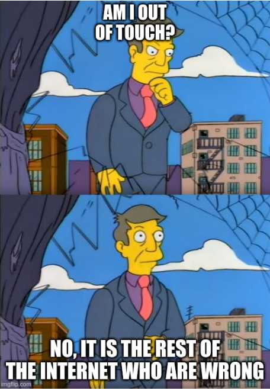

Recently Tom MacWright has written a few posts on Single Page Applications and their discontents:
The emerging norm for web development is to build a React single-page application, with server rendering. The two key elements of this architecture are something like:
- The main UI is built & updated in JavaScript using React or something similar.
- The backend is an API that that application makes requests against.
This idea has really swept the internet. It started with a few major popular websites and has crept into corners like marketing sites and blogs.
In these two articles Tom lays out the problem associated with the React/SPA everywhere mindset. If I can summarize them in one sentence: SPA frameworks tend to be complex, and you don’t get a lot of benefit for all that complexity in many cases.
Tom outlines a few alternatives to the SPA approach in the second article and, I’m happy to say, mentions htmx. However, he classifies htmx (as well as Stimulus and Alpine.js) as “progressive-enhancement” libraries. This is a good description, but, at least in the case of htmx, I think there is a better term to help describe this style of library: HTML-Centric (or, perhaps, Hypertext-Centric)
In HTML-Centric Development, rather than being an afterthought, HTML is embraced as the primary medium of application development. This is in contrast to most SPA frameworks, where a client-side model & the javascript that manipulates it is the central focus.
HTML-Centric Development builds on the original model of the web, as outlined in Roy Fielding’s PhD dissertation, describing the web architecture. In particular, by embracing HTML as a hypertext, you get the benefits of REST and HATEOAS, all without needing to be an expert in either of those topics.
(Recall, Roy was describing the web architecture, so the original web was largely REST-ful, without any particular effort on the part of the original participants)
By picking HTML-Centric Development, you accrue many benefits:
With all these benefits of the HTML-Centric model, one may wonder why it has been abandoned (and is often mocked) by many web developers. At a high level, the answer is:
HTML-Centric applications have historically offered a limited amount of interactivity when compared with javascript-based applications.
This is in large part because HTML is a limited hypertext. In particular:
<a> and <form> can make HTTP requestsclick & submit events can trigger themOf course, none of the constraints are inherent in the concept of a hypertext, and the goal of htmx is to remove each of them.
By removing these constraints and completing HTML as a fully-functional and high-powered hypertext, HTML-Centric applications can compete with SPAs in many application domains, while at the same time accruing the technical and complexity benefits mentioned above.
Tom closes his first article with this:
What if everyone’s wrong? We’ve been wrong before.
Web development has gone down blind alleys quite a few times: GWT, Java Server Faces, Angular 1, FlatUI, etc.
During the height of the hype cycle around each of these technologies, it was difficult to go against the grain. It is
particularly difficult to do in the technology world , where the being left behind technically is not only a threat to
our ego, but also to our employment.
“No One Ever Got Fired For Using React”
is today’s
“No One Ever Got Fired For Buying IBM”
That’s a reality that we must accept, even if we feel that React/etc. aren’t appropriate for many (or even most) web applications being built today.
However, we are starting to see a reconsideration of the SPA approach. With a bit of technical bravery, a willingness to stand against the crowd, you may be able to make your application much less complex, and focus your development efforts on what your application does, rather than on how it does it.
From the htmx developer’s starter kit:
